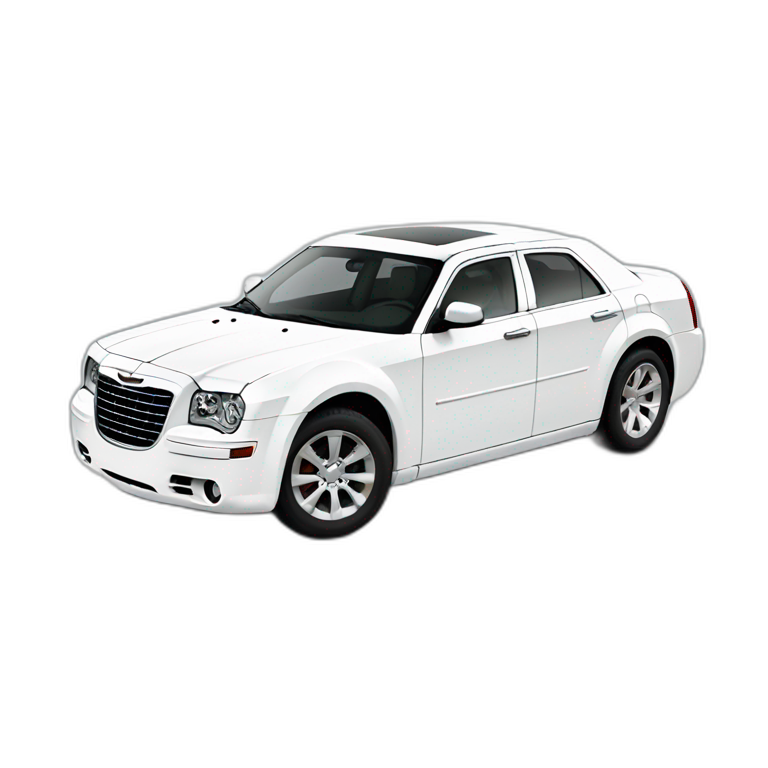
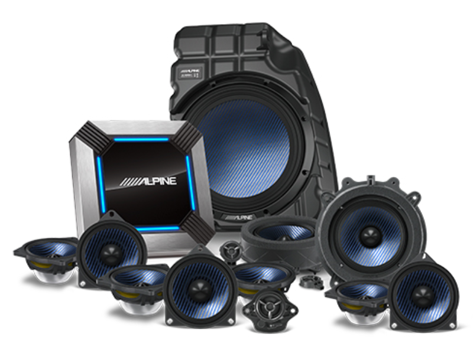
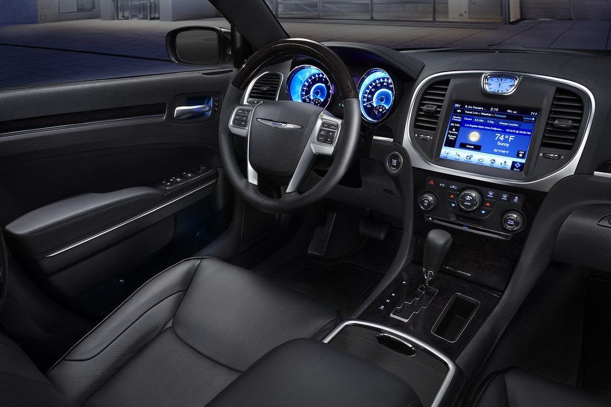

The Chrysler 300 offers a wide range of features, tailored to provide both
comfort and cutting-edge technology across its different models. The
entry-level Chrysler 300 Touring model comes with an 8.4-inch Uconnect®
infotainment system, which supports both Apple CarPlay® and Android Auto™,
allowing seamless smartphone integration for navigation, media, and apps.
Additionally, the Touring model is equipped with dual-zone automatic
climate control, ensuring that both the driver and passengers can enjoy
personalized temperature settings. Keyless entry and push-button start add
convenience to daily driving, while a six-speaker sound system ensures an
enjoyable audio experience on the go.
For those seeking a bit more luxury, the Chrysler 300S adds several
upscale features to elevate the driving experience. This model includes
premium leather-trimmed sport seats, offering both heating and power
adjustability for the front seats. The 300S also stands out with its
performance-focused upgrades, such as a sport-tuned suspension and paddle
shifters, delivering a more responsive and engaging ride. The sound system
is upgraded to a 9-speaker Alpine® audio system, which provides crisp,
immersive sound. Exterior enhancements, like blacked-out accents and
20-inch aluminum wheels, give the 300S a more aggressive, stylish
appearance.


At the top of the lineup, the Chrysler 300C is equipped with a wealth of
luxury and performance features. The 300C offers a more powerful 5.7-liter
HEMI® V8 engine, generating 363 horsepower for an exhilarating driving
experience. Inside, it boasts ventilated Nappa leather seats, a heated
wood-and-leather-wrapped steering wheel, and memory settings for the
driver’s seat, mirrors, and pedals. The 300C also includes advanced safety
features like adaptive cruise control, blind-spot monitoring, and lane
departure warning. A panoramic sunroof, Harman Kardon® 19-speaker premium
audio system, and real wood interior trim further enhance the 300C’s
standing as a luxury sedan that offers both comfort and high-end
technology.